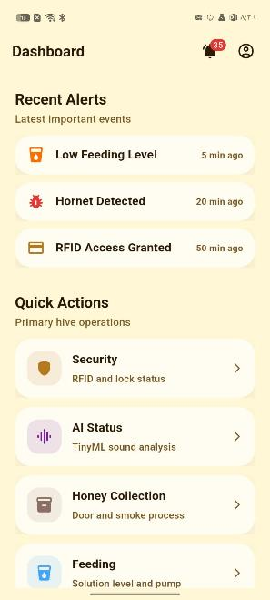
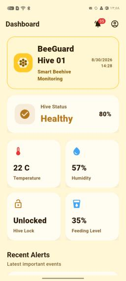
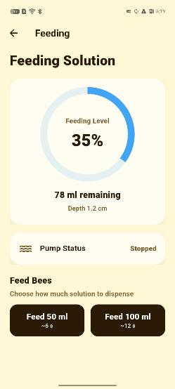
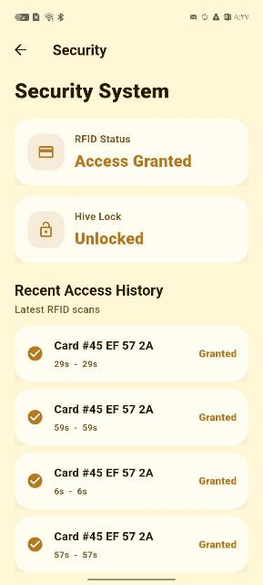
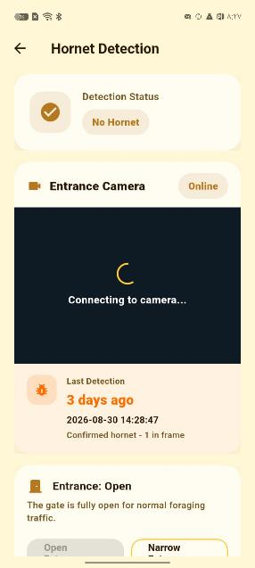
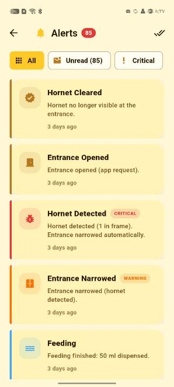

A smart beehive that watches over the colony.
BeeGuard monitors the hive, detects hornets, controls access, and automates feeding and honey collection, powered by the sun and managed from a mobile app.
See what it doesView codeChecking a hive means opening it
Beekeepers have to open a hive to see whether the queen is present, whether feed is running low, or whether predators are attacking. Each opening stresses the colony, and problems like queen loss or wasp attacks can develop between visits, especially at hives in remote areas.
BeeGuard watches the hive continuously and reacts at the hive itself, so the beekeeper can step in earlier and open the hive less often.
What BeeGuard does
Monitoring, protection, and care automation in one hive-mounted system.
Monitors the colony
Tracks temperature, humidity, hive weight, feed level, and hive sound, with a live view in the app.
Listens for queen loss
A TinyML model runs on the hive's own ESP32 board and screens hive audio for queen loss, with no internet needed for the analysis.
Stops hornets
A camera at the entrance spots hornet-like insects. The entrance narrows so bees pass but larger insects can't, then reopens automatically.
Controls access
An RFID lock opens with a card or key fob. Every scan is logged with the card ID and time and shown in the app.
Feeds on demand
Send a 50 ml or 100 ml dose from your phone. The pump runs a calibrated time and the app shows the tank level.
Assists the harvest
One command opens the honey door and releases a short burst of smoke to calm the bees. The door stays open until you close it.
How it works
Three ESP32 boards share the work and talk to each other over ESP-NOW. Only the main controller connects to the internet.
Monitor board
Microphone, temperature and humidity sensor, and the on-device sound classifier.
Camera board
Hornet detection at the entrance and a live video stream to the app.
Main controller
Lock, feeding, honey door, entrance, and weight. It syncs with Firebase and runs actuators locally even if the connection drops.
The hive runs on rechargeable lithium batteries charged by a solar panel, so it can work where there is no mains power. The mobile app is built with Flutter and shows alerts, live readings, access history, and controls.
The beekeeper's app
Screens from the BeeGuard mobile app, running against live data from the prototype hive.






Where we are
A working prototype, field-tested end to end on a real hive.
Next steps
- Record sound from local hives to improve queen-loss detection.
- Add swarming detection, push notifications, and battery reporting.
- Restrict RFID access to registered cards and add user sign-in to the app.
- Support many hives in one dashboard.
Team
Lama Damere
Computer Engineering, An-Najah National University
Yamama Sawalmeh
Computer Engineering, An-Najah National University
BeeGuard began as a hardware graduation project at An-Najah National University in Nablus, Palestine (academic year 2025/2026). We built it for the beekeepers of Palestine and beyond.
Contact
Questions, partnerships, or feedback? Email us at yamama.sawalma123@gmail.com.